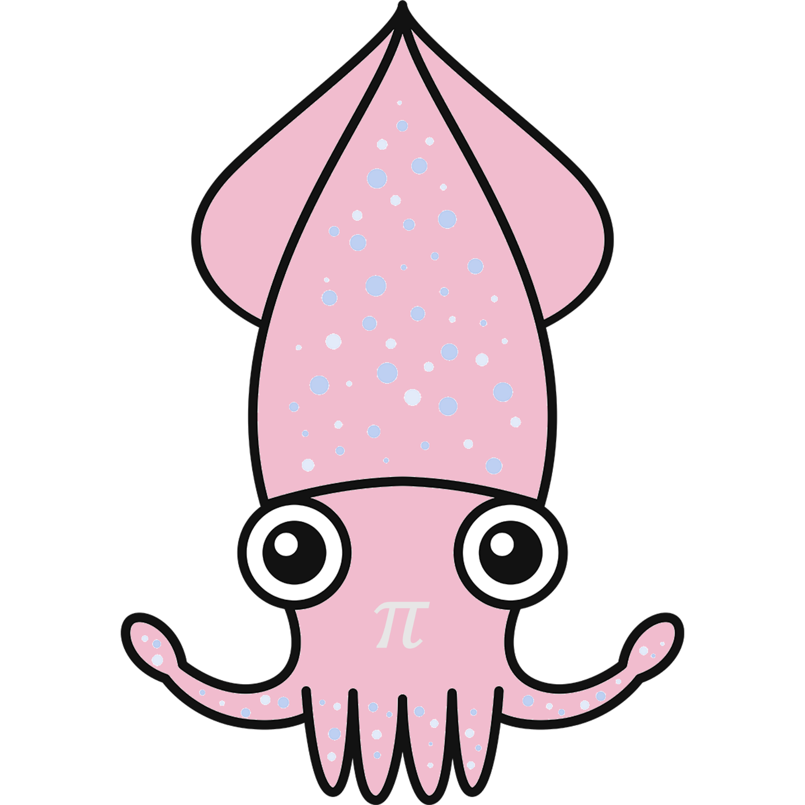

ToyaMath 2027
富山数理ワークショップ 2027
2027年3月17日（水）〜20日（土）
本会議は3月18日（木）・19日（金）に開催予定
富山大学 五福キャンパス · 理学部多目的ホール
お知らせ
プログラム・参加登録の詳細は、決まり次第お知らせします。
概要
数学、応用数学、情報科学、機械学習に関係する研究者が集まり、自由な雰囲気で意見交換ができる場を提供することが本ワークショップの目的です。
単なる講演会ではなく、時間をかけて登壇者の研究の背景や考え方に触れ、研究者としての関心や人となりを知る機会となることも重視します。専門分野への理解を深めるとともに、分野を越えた対話から新たな見方や発想が生まれる場を目指します。
これを通じて、専門分野への理解を深めるとともに、分野を越えた学びや、新たな研究テーマのシーズとなる出会いやコミュニティの創出・継続性の確保を狙います。
開催日時・会場
日時：2027年3月17日（水）〜20日（土）（本会議は18日と19日に開催予定）
会場：富山大学 五福キャンパス 理学部多目的ホール（多目的ホールへのアクセス方法（PDF））
プログラム
TBA（後日お知らせします）
参加登録
参加費：一般1,000円／学生無料
申込受付は後日開始します。受付開始時に、本ページでご案内します。
オーガナイザー
- 田中 一成（株式会社RICOS / 早稲田大学）
- 宇田 智紀（南山大学）
ローカルオーガナイザー
- 秋山 正和（富山大学）
- 清水 雄貴（富山大学）
運営・事務局
問い合わせ先
MaSIC 事務局宛
メール：info@masic.jp
件名に「富山数理ワークショップ2027」とご記入ください。